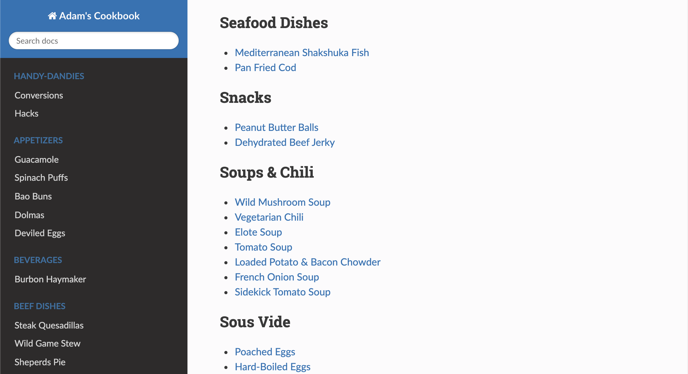

Homelab Diaries: Making a fancy Cookbook
Yo Chef!
The Chef of Chefs!
I love to cook! And like many people, I've accumulated far too many cookbooks and recipes, which over time becomes highly inefficient when searching for a particular recipe to cook - especially when time is tight during weeknights. I've probably pruned my “go to” list of recipes down multiple times, but it still just doesn't serve me as well as I'd hoped.
Initially I began to prototype this project during some free time at work one day using Sphinx, as I already had familiarity working with it for technical documentation. Aside from that, it's pretty easy to get a Docker container up with a simple web server hosting the cookbook code within the homelab, so a total win in my book.
So here it is, my solution to building a digital cookbook - bon appetit!
Building the cookbook
First things first, I'd strongly recommend leveraging a Docker container for something like this as it doesn't need the heavy footprint of a dedicated VM for hosting internally.
The initial construction is nothing more than package dependencies and generating boilerplate code.
Steps to install dependencies and create a new project:
# 1. Installing Python
$ sudo apt-get install python3.6
# 2. Installing Pip
$ sudo apt-get install python3-pip
# 3. Installing Sphinx
$ sudo apt-get install python3-sphinx
# 4. Creating a Sphinx Project
$ sphinx-quickstart
That's it! This concludes the required initial tasks to get this project up and running, now it's just a matter of adding content and deploying.
Workflow Overview
To give you an idea of what the end result will look like:

And pretty quickly you'll notice your docs look a bit different than mine…enter custom themes!
First, you need to install the theme:
$ pip install sphinx_rtd_theme
Then you need to update a few settings in your conf.py.
import sphinx_rtd_theme
html_theme = 'sphinx_rtd_theme'
html_theme_path = [sphinx_rtd_theme.get_html_theme_path()]
If you rebuild your documentation, you will see the new theme:
$ make html
Now onto the workflow! For me, I stick to these steps:
# 1. If the dir/file doesn't exist, make one
$ mkdir bread && cd bread/
# 2. If you're adding a new recipe to an existing dir
$ cd bread/
$ touch french-country-bread.rst
# 3. Add the file entry in the `index.rst`
.. toctree::
:maxdepth: 2
:caption: Bread
bread/french-country-bread
# 4. Add content to the new file
# Add the recipe ingredients and steps of your choosing to the new file.
# 5. Build and verify
$ make html
In a browser window, navigate to your local file directory where your project is located and open the docs/build/html/index.html file to view the new changes. Rinse and repeat as necessary!
Deployments
This will probably be contingent upon your own personal workflow, so I won't spend too much time covering this point. Initially during my prototyping phase, I just used http.server to quickly deploy internally.
You could do the same, however http.server is not recommended for a true Production environment as it only implements basic security checks, just be aware of the limitations and dangers.
My approach was to Dockerize this app, and have it part of my Production Portainer stack still using http.server to seamlessly perform. Whatever you decide, once you have your server running you can view your cookbook by dialing up x.x.x.x:8000 in your web browser of choice, and just like that you'll have yourself a little cookbook!
Final thoughts
At the end of the day, I'm happy with the result, and it functions as it was intended to. While this could have easily been accomplished through other means, I wanted to have something that leverages this particular tech stack so that I may keep my skills sharp by supporting it, because when the day comes once again to write technical documentation with the Sphinx/RST stack… well it’ll be way easier at least.